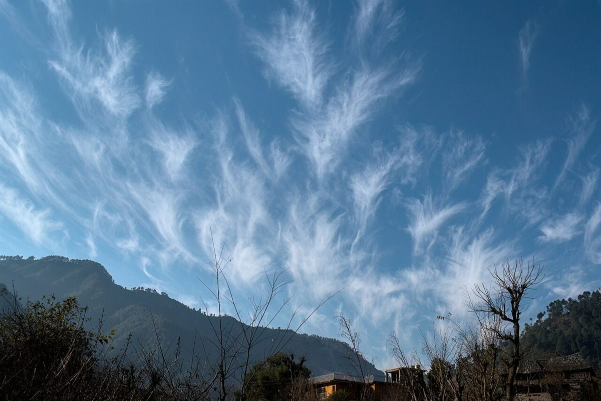
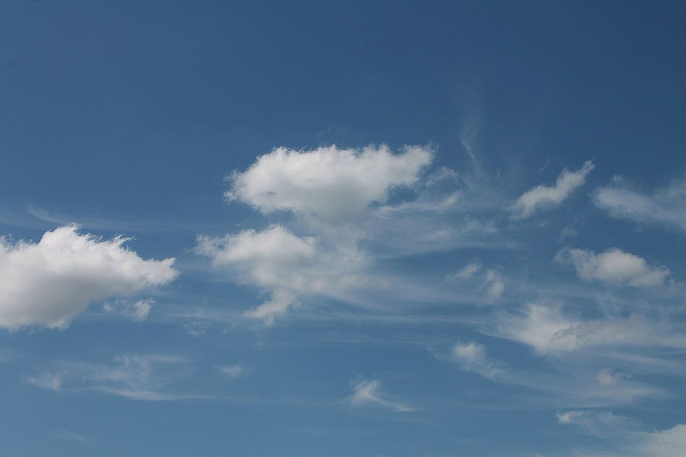

制作側の連想
凧が一枚、揚がるまで。
屋号の由来は分かりません。制作側は「あおのそら」という響きから、青空に揚がる凧を連想しました。屋号にある「自家培養酵母」を縦の骨、「国産小麦」を横の骨に見立て、空を張り、Instagramを糸にする、という作りでこのサイトを組んでいます。お店の理念や由来とは無関係の、制作側の連想です。
四つの部品
凧の骨組みに見立てて
- 一
縦の骨 ― 自家培養酵母
屋号の言葉から
屋号に「自家培養酵母」とあります。実際の製法や商品は確認できていないため、ここは言葉だけを骨に見立てています。

撮影地不明のイメージ - 二
横の骨 ― 国産小麦
屋号の言葉から
屋号に「国産小麦」とあります。写真は外国の麦のイメージで、お店の小麦とは関係がありません。

国外のイメージ(イタリア) - 三
張る紙 ― そら
屋号の「あおのそら」から
凧の紙面に見立てた空の写真です。時間帯ごとに色が変わる空を並べました(いずれも国外・撮影地不明)。

国外のイメージ(スウェーデン) - 四
凧糸 ― Instagram
確認できた連絡先
電話はなく、確認できている連絡手段はInstagramです。最新の様子は、まずこちらから。

国外のイメージ(イギリス)
凧の連なり
空の色見本、四枚。




写真は鶴岡市の風景ではなく、国外・撮影地不明のフリー素材です。空の色の見本として並べています。